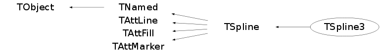

Function Members (Methods)
public:
| TSpline3() | |
| TSpline3(const TSpline3&) | |
| TSpline3(const TH1* h, const char* opt = 0, Double_t valbeg = 0, Double_t valend = 0) | |
| TSpline3(const char* title, const TGraph* g, const char* opt = 0, Double_t valbeg = 0, Double_t valend = 0) | |
| TSpline3(const char* title, Double_t* x, Double_t* y, Int_t n, const char* opt = 0, Double_t valbeg = 0, Double_t valend = 0) | |
| TSpline3(const char* title, Double_t* x, const TF1* func, Int_t n, const char* opt = 0, Double_t valbeg = 0, Double_t valend = 0) | |
| TSpline3(const char* title, Double_t xmin, Double_t xmax, Double_t* y, Int_t n, const char* opt = 0, Double_t valbeg = 0, Double_t valend = 0) | |
| TSpline3(const char* title, Double_t xmin, Double_t xmax, const TF1* func, Int_t n, const char* opt = 0, Double_t valbeg = 0, Double_t valend = 0) | |
| virtual | ~TSpline3() |
| void | TObject::AbstractMethod(const char* method) const |
| virtual void | TObject::AppendPad(Option_t* option = "") |
| virtual void | TObject::Browse(TBrowser* b) |
| static TClass* | Class() |
| virtual const char* | TObject::ClassName() const |
| virtual void | TNamed::Clear(Option_t* option = "") |
| virtual TObject* | TNamed::Clone(const char* newname = "") const |
| virtual Int_t | TNamed::Compare(const TObject* obj) const |
| virtual void | TNamed::Copy(TObject& named) const |
| virtual void | TObject::Delete(Option_t* option = "")MENU |
| Double_t | Derivative(Double_t x) const |
| Int_t | TAttLine::DistancetoLine(Int_t px, Int_t py, Double_t xp1, Double_t yp1, Double_t xp2, Double_t yp2) |
| virtual Int_t | TSpline::DistancetoPrimitive(Int_t px, Int_t py) |
| virtual void | TSpline::Draw(Option_t* option = "") |
| virtual void | TObject::DrawClass() constMENU |
| virtual TObject* | TObject::DrawClone(Option_t* option = "") constMENU |
| virtual void | TObject::Dump() constMENU |
| virtual void | TObject::Error(const char* method, const char* msgfmt) const |
| virtual Double_t | Eval(Double_t x) const |
| virtual void | TObject::Execute(const char* method, const char* params, Int_t* error = 0) |
| virtual void | TObject::Execute(TMethod* method, TObjArray* params, Int_t* error = 0) |
| virtual void | TSpline::ExecuteEvent(Int_t event, Int_t px, Int_t py) |
| virtual void | TObject::Fatal(const char* method, const char* msgfmt) const |
| virtual void | TNamed::FillBuffer(char*& buffer) |
| virtual TObject* | TObject::FindObject(const char* name) const |
| virtual TObject* | TObject::FindObject(const TObject* obj) const |
| Int_t | FindX(Double_t x) const |
| void | GetCoeff(Int_t i, Double_t& x, Double_t& y, Double_t& b, Double_t& c, Double_t& d) |
| virtual Double_t | TSpline::GetDelta() const |
| virtual Option_t* | TObject::GetDrawOption() const |
| static Long_t | TObject::GetDtorOnly() |
| virtual Color_t | TAttFill::GetFillColor() const |
| virtual Style_t | TAttFill::GetFillStyle() const |
| TH1F* | TSpline::GetHistogram() const |
| virtual const char* | TObject::GetIconName() const |
| virtual void | GetKnot(Int_t i, Double_t& x, Double_t& y) const |
| virtual Color_t | TAttLine::GetLineColor() const |
| virtual Style_t | TAttLine::GetLineStyle() const |
| virtual Width_t | TAttLine::GetLineWidth() const |
| virtual Color_t | TAttMarker::GetMarkerColor() const |
| virtual Size_t | TAttMarker::GetMarkerSize() const |
| virtual Style_t | TAttMarker::GetMarkerStyle() const |
| virtual const char* | TNamed::GetName() const |
| virtual Int_t | TSpline::GetNp() const |
| virtual Int_t | TSpline::GetNpx() const |
| virtual char* | TObject::GetObjectInfo(Int_t px, Int_t py) const |
| static Bool_t | TObject::GetObjectStat() |
| virtual Option_t* | TObject::GetOption() const |
| virtual const char* | TNamed::GetTitle() const |
| virtual UInt_t | TObject::GetUniqueID() const |
| virtual Double_t | TSpline::GetXmax() const |
| virtual Double_t | TSpline::GetXmin() const |
| virtual Bool_t | TObject::HandleTimer(TTimer* timer) |
| virtual ULong_t | TNamed::Hash() const |
| virtual void | TObject::Info(const char* method, const char* msgfmt) const |
| virtual Bool_t | TObject::InheritsFrom(const char* classname) const |
| virtual Bool_t | TObject::InheritsFrom(const TClass* cl) const |
| virtual void | TObject::Inspect() constMENU |
| void | TObject::InvertBit(UInt_t f) |
| virtual TClass* | IsA() const |
| virtual Bool_t | TObject::IsEqual(const TObject* obj) const |
| virtual Bool_t | TObject::IsFolder() const |
| Bool_t | TObject::IsOnHeap() const |
| virtual Bool_t | TNamed::IsSortable() const |
| virtual Bool_t | TAttFill::IsTransparent() const |
| Bool_t | TObject::IsZombie() const |
| virtual void | TNamed::ls(Option_t* option = "") const |
| void | TObject::MayNotUse(const char* method) const |
| virtual void | TAttLine::Modify() |
| virtual Bool_t | TObject::Notify() |
| void | TObject::Obsolete(const char* method, const char* asOfVers, const char* removedFromVers) const |
| static void | TObject::operator delete(void* ptr) |
| static void | TObject::operator delete(void* ptr, void* vp) |
| static void | TObject::operator delete[](void* ptr) |
| static void | TObject::operator delete[](void* ptr, void* vp) |
| void* | TObject::operator new(size_t sz) |
| void* | TObject::operator new(size_t sz, void* vp) |
| void* | TObject::operator new[](size_t sz) |
| void* | TObject::operator new[](size_t sz, void* vp) |
| TSpline3& | operator=(const TSpline3&) |
| virtual void | TSpline::Paint(Option_t* option = "") |
| virtual void | TObject::Pop() |
| virtual void | TNamed::Print(Option_t* option = "") const |
| virtual Int_t | TObject::Read(const char* name) |
| virtual void | TObject::RecursiveRemove(TObject* obj) |
| virtual void | TAttFill::ResetAttFill(Option_t* option = "") |
| virtual void | TAttLine::ResetAttLine(Option_t* option = "") |
| virtual void | TAttMarker::ResetAttMarker(Option_t* toption = "") |
| void | TObject::ResetBit(UInt_t f) |
| virtual void | SaveAs(const char* filename, Option_t* option = "") const |
| virtual void | TAttFill::SaveFillAttributes(ostream& out, const char* name, Int_t coldef = 1, Int_t stydef = 1001) |
| virtual void | TAttLine::SaveLineAttributes(ostream& out, const char* name, Int_t coldef = 1, Int_t stydef = 1, Int_t widdef = 1) |
| virtual void | TAttMarker::SaveMarkerAttributes(ostream& out, const char* name, Int_t coldef = 1, Int_t stydef = 1, Int_t sizdef = 1) |
| virtual void | SavePrimitive(ostream& out, Option_t* option = "") |
| void | TObject::SetBit(UInt_t f) |
| void | TObject::SetBit(UInt_t f, Bool_t set) |
| virtual void | TObject::SetDrawOption(Option_t* option = "")MENU |
| static void | TObject::SetDtorOnly(void* obj) |
| virtual void | TAttFill::SetFillAttributes()MENU |
| virtual void | TAttFill::SetFillColor(Color_t fcolor) |
| virtual void | TAttFill::SetFillStyle(Style_t fstyle) |
| virtual void | TAttLine::SetLineAttributes()MENU |
| virtual void | TAttLine::SetLineColor(Color_t lcolor) |
| virtual void | TAttLine::SetLineStyle(Style_t lstyle) |
| virtual void | TAttLine::SetLineWidth(Width_t lwidth) |
| virtual void | TAttMarker::SetMarkerAttributes()MENU |
| virtual void | TAttMarker::SetMarkerColor(Color_t tcolor = 1) |
| virtual void | TAttMarker::SetMarkerSize(Size_t msize = 1) |
| virtual void | TAttMarker::SetMarkerStyle(Style_t mstyle = 1) |
| virtual void | TNamed::SetName(const char* name)MENU |
| virtual void | TNamed::SetNameTitle(const char* name, const char* title) |
| void | TSpline::SetNpx(Int_t n) |
| static void | TObject::SetObjectStat(Bool_t stat) |
| virtual void | SetPoint(Int_t i, Double_t x, Double_t y) |
| virtual void | SetPointCoeff(Int_t i, Double_t b, Double_t c, Double_t d) |
| virtual void | TNamed::SetTitle(const char* title = "")MENU |
| virtual void | TObject::SetUniqueID(UInt_t uid) |
| virtual void | ShowMembers(TMemberInspector& insp) |
| virtual Int_t | TNamed::Sizeof() const |
| virtual void | Streamer(TBuffer& b) |
| void | StreamerNVirtual(TBuffer& b) |
| virtual void | TObject::SysError(const char* method, const char* msgfmt) const |
| static void | Test() |
| Bool_t | TObject::TestBit(UInt_t f) const |
| Int_t | TObject::TestBits(UInt_t f) const |
| virtual void | TObject::UseCurrentStyle() |
| virtual void | TObject::Warning(const char* method, const char* msgfmt) const |
| virtual Int_t | TObject::Write(const char* name = 0, Int_t option = 0, Int_t bufsize = 0) |
| virtual Int_t | TObject::Write(const char* name = 0, Int_t option = 0, Int_t bufsize = 0) const |
protected:
| virtual void | BuildCoeff() |
| virtual void | TObject::DoError(int level, const char* location, const char* fmt, va_list va) const |
| void | TObject::MakeZombie() |
| void | SetCond(const char* opt) |
Data Members
public:
| enum TObject::EStatusBits { | kCanDelete | |
| kMustCleanup | ||
| kObjInCanvas | ||
| kIsReferenced | ||
| kHasUUID | ||
| kCannotPick | ||
| kNoContextMenu | ||
| kInvalidObject | ||
| }; | ||
| enum TObject::[unnamed] { | kIsOnHeap | |
| kNotDeleted | ||
| kZombie | ||
| kBitMask | ||
| kSingleKey | ||
| kOverwrite | ||
| kWriteDelete | ||
| }; |
protected:
| Int_t | fBegCond | 0=no beg cond, 1=first derivative, 2=second derivative |
| Double_t | TSpline::fDelta | Distance between equidistant knots |
| Int_t | fEndCond | 0=no end cond, 1=first derivative, 2=second derivative |
| Color_t | TAttFill::fFillColor | fill area color |
| Style_t | TAttFill::fFillStyle | fill area style |
| TGraph* | TSpline::fGraph | Graph for drawing the knots |
| TH1F* | TSpline::fHistogram | Temporary histogram |
| Bool_t | TSpline::fKstep | True of equidistant knots |
| Color_t | TAttLine::fLineColor | line color |
| Style_t | TAttLine::fLineStyle | line style |
| Width_t | TAttLine::fLineWidth | line width |
| Color_t | TAttMarker::fMarkerColor | Marker color index |
| Size_t | TAttMarker::fMarkerSize | Marker size |
| Style_t | TAttMarker::fMarkerStyle | Marker style |
| TString | TNamed::fName | object identifier |
| Int_t | TSpline::fNp | Number of knots |
| Int_t | TSpline::fNpx | Number of points used for graphical representation |
| TSplinePoly3* | fPoly | [fNp] Array of polynomial terms |
| TString | TNamed::fTitle | object title |
| Double_t | fValBeg | Initial value of first or second derivative |
| Double_t | fValEnd | End value of first or second derivative |
| Double_t | TSpline::fXmax | Maximum value of abscissa |
| Double_t | TSpline::fXmin | Minimum value of abscissa |
Class Charts
{kind=link}
{kind=link}
{kind=link}
{kind=link}

Function documentation
TSpline3(const char *title, Double_t x[], Double_t y[], Int_t n, const char *opt, Double_t valbeg, Double_t valend)
Third spline creator given an array of arbitrary knots in increasing abscissa order and possibly end point conditions
TSpline3(const char *title, Double_t xmin, Double_t xmax, Double_t y[], Int_t n, const char *opt, Double_t valbeg, Double_t valend)
Third spline creator given an array of arbitrary function values on equidistant n abscissa values from xmin to xmax and possibly end point conditions
TSpline3(const char* title, Double_t* x, const TF1* func, Int_t n, const char* opt = 0, Double_t valbeg = 0, Double_t valend = 0)
Third spline creator given an array of arbitrary abscissas in increasing order and a function to interpolate and possibly end point conditions
TSpline3(const char* title, Double_t xmin, Double_t xmax, const TF1* func, Int_t n, const char* opt = 0, Double_t valbeg = 0, Double_t valend = 0)
Third spline creator given a function to be evaluated on n equidistand abscissa points between xmin and xmax and possibly end point conditions
TSpline3(const char* title, const TGraph* g, const char* opt = 0, Double_t valbeg = 0, Double_t valend = 0)
Third spline creator given a TGraph with abscissa in increasing order and possibly end point conditions
TSpline3(const TH1* h, const char* opt = 0, Double_t valbeg = 0, Double_t valend = 0)
Third spline creator given a TH1
void Test()
Test method for TSpline5 n number of data points. m 2*m-1 is order of spline. m = 2 always for third spline. nn,nm1,mm, mm1,i,k, j,jj temporary integer variables. z,p temporary double precision variables. x[n] the sequence of knots. y[n] the prescribed function values at the knots. a[200][4] two dimensional array whose columns are the computed spline coefficients diff[3] maximum values of differences of values and derivatives to right and left of knots. com[3] maximum values of coefficients. test of TSpline3 with nonequidistant knots and equidistant knots follows.
void SaveAs(const char* filename, Option_t* option = "") const
write this spline as a C++ function that can be executed without ROOT the name of the function is the name of the file up to the "." if any
void SavePrimitive(ostream& out, Option_t* option = "")
Save primitive as a C++ statement(s) on output stream out
void BuildCoeff()
subroutine cubspl ( tau, c, n, ibcbeg, ibcend )
from * a practical guide to splines * by c. de boor
************************ input ***************************
n = number of data points. assumed to be .ge. 2.
(tau(i), c(1,i), i=1,...,n) = abscissae and ordinates of the
data points. tau is assumed to be strictly increasing.
ibcbeg, ibcend = boundary condition indicators, and
c(2,1), c(2,n) = boundary condition information. specifically,
ibcbeg = 0 means no boundary condition at tau(1) is given.
in this case, the not-a-knot condition is used, i.e. the
jump in the third derivative across tau(2) is forced to
zero, thus the first and the second cubic polynomial pieces
are made to coincide.)
ibcbeg = 1 means that the slope at tau(1) is made to equal
c(2,1), supplied by input.
ibcbeg = 2 means that the second derivative at tau(1) is
made to equal c(2,1), supplied by input.
ibcend = 0, 1, or 2 has analogous meaning concerning the
boundary condition at tau(n), with the additional infor-
mation taken from c(2,n).
*********************** output **************************
c(j,i), j=1,...,4; i=1,...,l (= n-1) = the polynomial coefficients
of the cubic interpolating spline with interior knots (or
joints) tau(2), ..., tau(n-1). precisely, in the interval
(tau(i), tau(i+1)), the spline f is given by
f(x) = c(1,i)+h*(c(2,i)+h*(c(3,i)+h*c(4,i)/3.)/2.)
where h = x - tau(i). the function program *ppvalu* may be
used to evaluate f or its derivatives from tau,c, l = n-1,
and k=4.